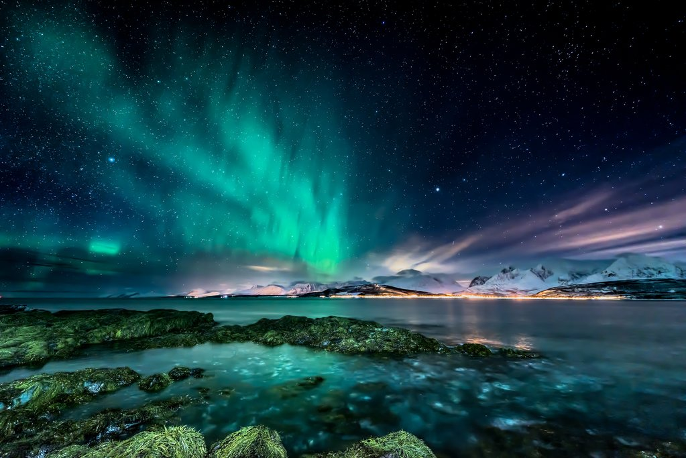

Northern Lights, Norway

It's amazing to see this natural phenomena that may look like some other worldy happenings that is consistently occurring on another country specifically, Norway. It looks like the northern lights are coming from a sci-fi movie but it is in fact real. This is the reason why I am so fascinated in this place.
The Northern Lights can be seen in various locations across Norway, with Tromsø being one of the most popular destinations. Here’s how to get there: